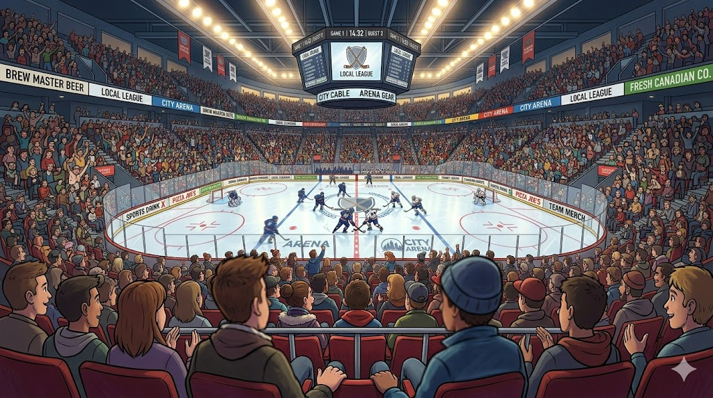

Everything you need for event photo printing, in a single offline app.
Guests upload one or multiple photos from their phone. Each photo goes through a full editor with crop, rotate, brightness, contrast, and saturation controls.
Create projects with overlay images and text that automatically apply to every photo. Separate templates for landscape and portrait orientations.
Full print queue management with CUPS integration. Support for multiple printers with round-robin or manual assignment.

Guests and admins can browse all event photos, view print previews, and download originals or rendered versions.
Built for offline events. Turn any machine into a self-contained photo kiosk with WiFi, captive portal, and HTTPS.